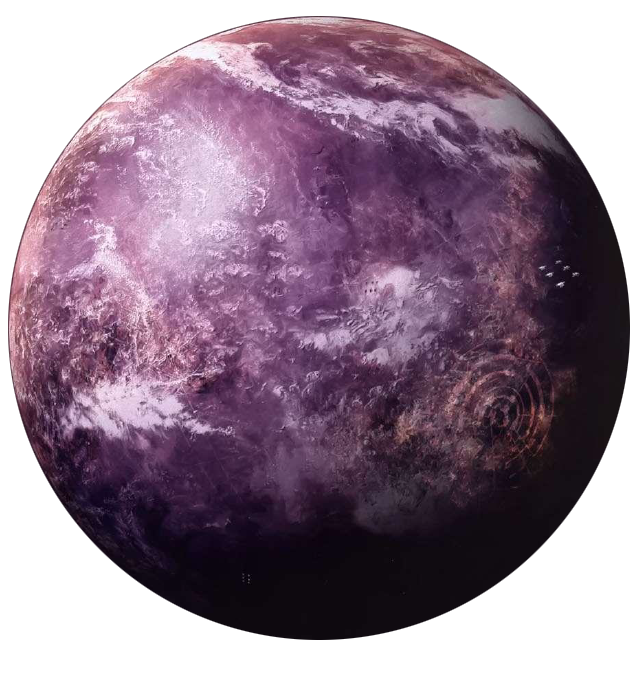

Fondor
fondor
Population: 5 Billion
Terrain: Industrial Urban
Orbital Metrics: 412 days per year / 31 hours per day
Languages: Basic
Major Cities: Fondor City (capital)
Areas of Interest: Orbital Shipyards, Underground Steam Tunnels, Cities
Major Exports: Starships, Technology, Droids
Major Imports: Consumables, Luxury goods, Mechanicals, Droids
Astronavigation Data
Trade Routes: Rimma Trade Route, secret hyperspace route to Gandeal in Core
Ranked third behind Corellia and Kuat in starship construction, Fondor has staked its reputation not in mass production, but in quality. Many of the best-designed frigates and capital ships are built in its shipyards, from the Super Star Destroyer Executor to Hutt yachts. The Fondor Starshipwrights Guild guarantees this caliber of quality by exercising control over every step that goes into starship construction, from blueprint designs and mechanical implementation to planetary governance and even the micromanagement of workers' daily lives.
Millennia of starship construction have taken their toll on Fondor. Navigating leftover debris or the starship girders that ring the planet is a nightmare. Most freighters dock at orbiting stations, with passengers conveyed by shuttle through the safest corridors to the planet. Newcomers often gasp at the effect mining and industrialization has had on the surface. Virtually all of Fondor is covered with factories, exhaust stacks, administration complexes, and metal refineries. Its underground is no different, a hollowed-out hive of access tunnels and steam vents.
The guild is quite aware that their hard-working members need a release for stress, and consequently has turned Fondor's capital into the perfect retreat for well-intentioned debauchery. Just about every vice is offered in some form or another, in compliance with guild regulations, of course. Workers understand that too much indulgence can lead to termination, though often it does not go that far, since the guild keeps an eye'on its employees at all times.
The guild relies on droids to keep its sentient workforce's size manageable. Self-service units accomplish the most menial tasks, while giant droid brains coordinate production cycles, workers' schedules, and large-scale projects to achieve maximum efficiency. This dependence on mechanical labor has given birth to Fondor's second industry: droid design and manufacture. Fondor turns out some of the most capable labor droids in the galaxy.
In the last few decades, Fondor's shipyards have been nationalized by the Empire. This, plus dracohian security measures during the construction of the Executor, turned Fondor into an Imperial military enclave.
Moon of Nallastia
Centuries ago, a group of Fondorians broke away from the guild to protect the jungle moon of Nallastia from exploitation. Sympathetic Mon Calamari and Ithorians in the Republic Senate rallied behind the Nallastian movement to recognize its independence, much to the guild's ire. Now Fondor's moon revolves around the planet like a tempting jewel, and is whispered to be a shelter for the Rebel Alliance.